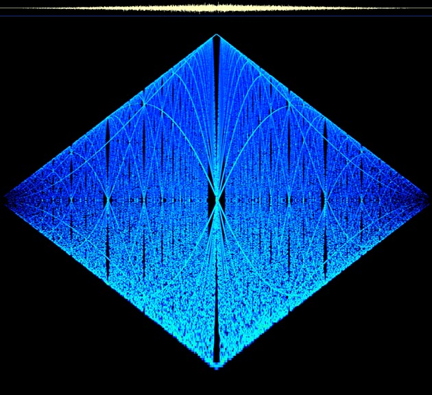
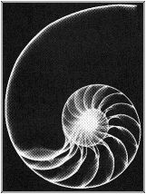
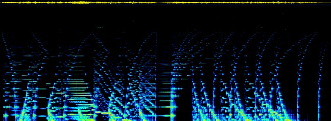

Above: Spectrogram of "Kali" (beginning), CSound piece by Dante Rosati (1991)

Contents:
Source Readings in Harmonic Theory
Proceedings of the First Aristoxenus Memorial Conference
for the Spectrographic Investigation of Musical Praxis
21 Tone Just Intonation Guitar
Primes
Some Good Books
Join the Tuning List
Other Web Resourcesupdated 6/ 10 / 99
"How the Numerical Ratios of the Notes were Discovered" from "The Enchiridon" by Nicomachus (2nd century A.D.)
"Degrees of Harmoniousness of Consonances" from On the Sensations of Tone by Helmholtz (1862)
"The One-Footed Bride" from "Genesis of A Music" by Harry Partch (1949)
"The Subjective Character of Intervals" from
"Music, Sound and Sensation" by Fritz Winckel (1960)
Proceedings of the
First Aristoxenus
Memorial Conference
for the Spectrographic
Investigation of Musical Praxis
"Intonation in a Tuvan 'Long Song'"
Emma Calve singing "Ma Lisette" (recorded in 1908)
David Finnamore's Analysis of Anonymous 4 singing "O Gloriosa Domina"
Musical sound can be thought of as audible number relations. How it is that audible number relations become the medium for the deep and complex musical languages that exist in every culture is unknown and, perhaps, unknowable. Harmonic theory rightly investigates the way number is manifest in sound itself, and in what ways, if any, these relationships are audible.
Just as prime numbers are the building blocks of the natural numbers, so are they the building blocks of sounds. In the harmonic series, even numbered partials always generate octave "duplications" of some lower partial. This feeling of octave equivalence seems to be universal, and a qualitative difference between even and odd partials is generally acknowledged. Nevertheless, noone can really say why octave duplication sounds to us like a projection of the same note at another level. It is as if the ratio 2/1 was in a class by itself, utterly different from all other ratios. I think it is more likely that the identity we hear in 2/1 is still present, though to a lesser degree, in 3/2 (even more so in 3/1). The identification with the fundamental lessens still further with each successive odd number introduced, while even partials always echo a quality from lower in the series.
Each partial is also itself the fundamental of its own series. For example, the ninth partial of a series is coincident with the third partial of its own third partial (3x3). This shows that the ninth partial is, on one level, redundant, because it can be derived both from the original series and as a projection of lower combined first-order and second-order partials. To my ears this results in nine being heard as a projection (and perhaps intensification -3^2) of threeness rather than as a new quality. The seventh partial, on the other hand, cannot be produced from lower partials upward by any method. It is "new" in a deeper sense than the ninth is, or the fifteenth. Nine sounds like it belongs with its parent: three. Fifteen shares a quality of sound with both its parents: five and three. Seven is, on the other hand, an original and unprecedented emanation from the source, as are 11 and 13. So primes mark the beginnings of new lineages of number relations. Once a new prime makes its appearance, it will interact with lower primes to project hybrids up into the harmonic series. As a bare measure of consonance, perhaps odd numbers tell the quantitative tale, but there is another relational dimension to musical sound in which the phenomena of prime numbers is audibly reflected.
 Click
on the score to go to my page at mp3.com, where you can hear this CSound
piece.
Click
on the score to go to my page at mp3.com, where you can hear this CSound
piece.

Here is a spectrogram of Primes. The score above corresponds to roughly the first half of the spectrogram.
"On the Sensations of Tone" by Hermann Helmholtz (first published 1862), Dover Publications, 1954.
A major masterpiece by a man who made significant contributions in several fields of science and mathematics. Back then, all they had were their ears and simple instruments for the analysis of sound, but this shows how much can be accomplished that way. Part One : "On the Composition of Vibrations". Part Two: On the interruptions of Harmony." Part Three: "The Relationship of Music Tones." The translator, Ellis, added 150 pages of appendices chock full of information on all aspects of acoustics, tuning theory and historical issues.
"Greek
Musical Writings, Volume II - Harmonic and Acoustic Theory" edited by Andrew
Barker. Cambridge University Press, 1989.
This book has translations of, and extensive notes to, the major extant Greek treatises and fragments discussing harmonic and acoustic theory. It costs an arm and a leg, but if you're interested in Greek music theory, or any kind of tuning theory, this book is indispensable."Ancient Greek Music" By M.L. West. Clarendon Press, 1992
Covers all aspects of music in the good old days. Discusses instruments, rhythm and tempo, scales and modes, melody, theory, notation and pitch, and the extant musical documents (tunes)."Genesis of A Music" by Harry Partch. Da Capo Press, 1949,1974.
Harry Partch was a one man harmonic army, building instruments to play his own works written in the tuning system he devised. This book contains descriptions of the tuning, the instruments and his major works, as well as a wide ranging discussion of the history of tuning theory."Divisions of the Tetrachord" by John H. Chalmers, Jr. Frog Peak Music, 1993
An amazing book which would not be out of place alongside Ptolomy and Aristoxenos in Barker (see above). It is both a treatise on the history and mathematics of tetrachords, and a catalogue of tetrachords which "attempts a complete and definitive compilation of all the tetrachords described in the literature and those that can be generated by the straightforward application of the arithmetic and geometric concepts described in the previous chapters." . The Tuning List is honored to have John Chalmers as a participant. (see below on how to join)"Harmonic Experience" by W.A Mathieu. Inner Traditions International, 1997
A relatively recent work, this is a deep book on harmonic theory masquerading as a new-agey music theory text. It teaches traditional keyboard harmony, but gears it towards improvisation rather than the usual abstract presentation of isolated cadences and progressions, with examples from "the masters" (read: German tonal art) Just intonation and equal temperament are presented as equally amazing, for different reasons. He also encourages the singing of just intervals and shows you how to do it.
Other Web Resources on Harmonic and Tuning Theory